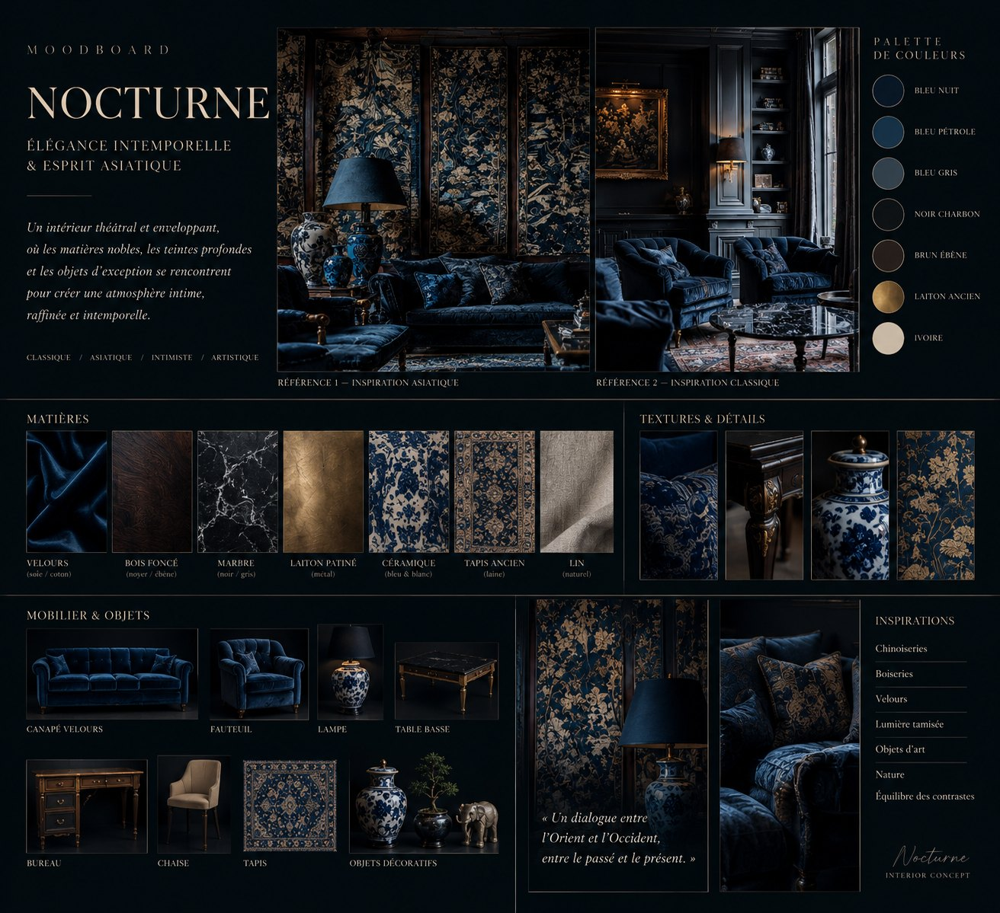
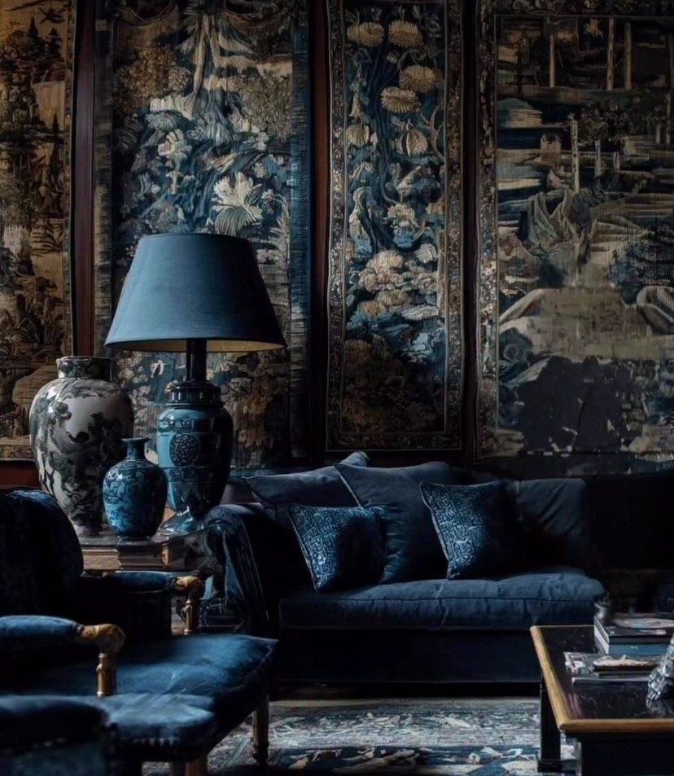
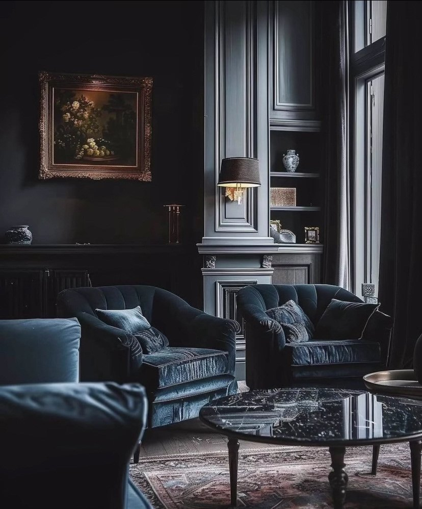

Nocturne Interior
The transformation of an existing living space into a theatrical and immersive environment. Deep blue tones, shadow, antique materials and curated objects create an interior suspended between memory and imagination.

Concept
An enveloping, theatrical interior where noble materials, deep tones and exceptional objects meet to create an intimate, refined and timeless atmosphere. The direction is classic, Asian-inspired, intimate and artistic.
Two references, one language
Chinoiserie tapestries and blue-and-white porcelain on one side; classic wood panelling, gilded frames and velvet armchairs on the other. The concept blends both into a single nocturnal palette.
Visuals


Colour palette
Materials
Inspirations
“A dialogue between East and West, between past and present.”
The two interior photographs are visual references used in the moodboard; the moodboard composition and concept are by Aurélie Dupassieux.